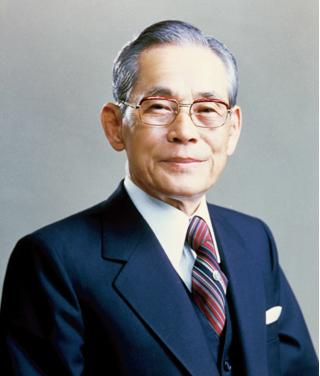

Samsung 三星公司
Ⅰ ． 品牌歷史
1969年1月13日，三星電子於大韓民國水原市成立[12][13]，創辦人是李秉喆。2009年，三星電子市值已達到1102億美元，首次超越英特爾，成為全球營收最大半導體製造商[14]。三星在2009年銷售額為1178億美元，已經超越惠普成為全球營收最大電子企業[15]，同時也是全球第二大晶片廠，規模僅次於英特爾[1
Ⅱ ． 三星LOGO的由來
三星logo演變歷史
最早的三星標誌就是把三顆星星放在一起，再加一些韓字組成，略顯複雜。後來三星logo標誌是三顆星星+SUMSANG組成，減掉一些文字，簡潔一些。接著三個星的外包圍變成了紅色，再加上SUMSANG組成，和上一版本相差不多。
到1993年，三星logo不再有三顆星星，改成了全字母標誌，並且加了藍底，簡潔大氣。